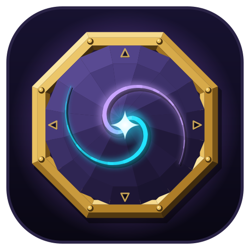
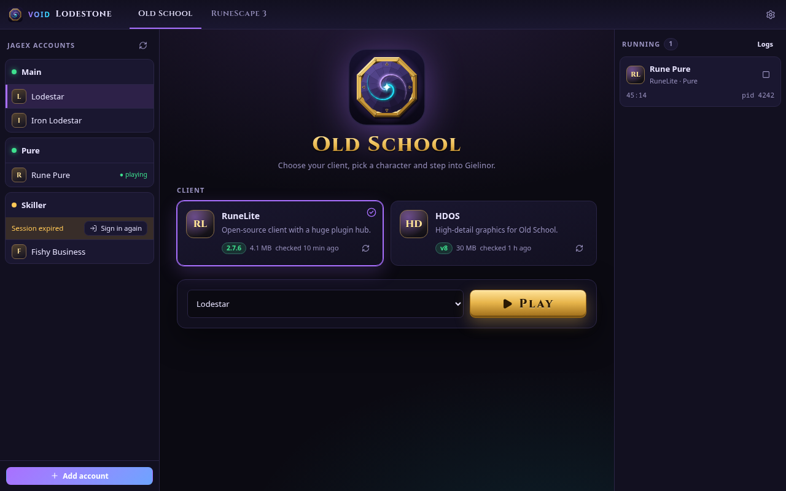
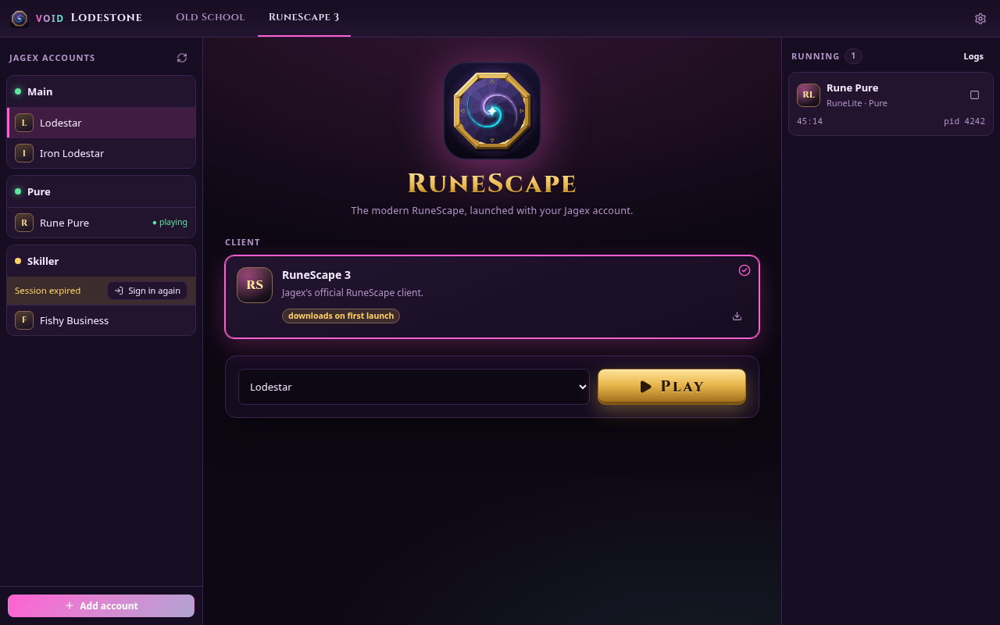
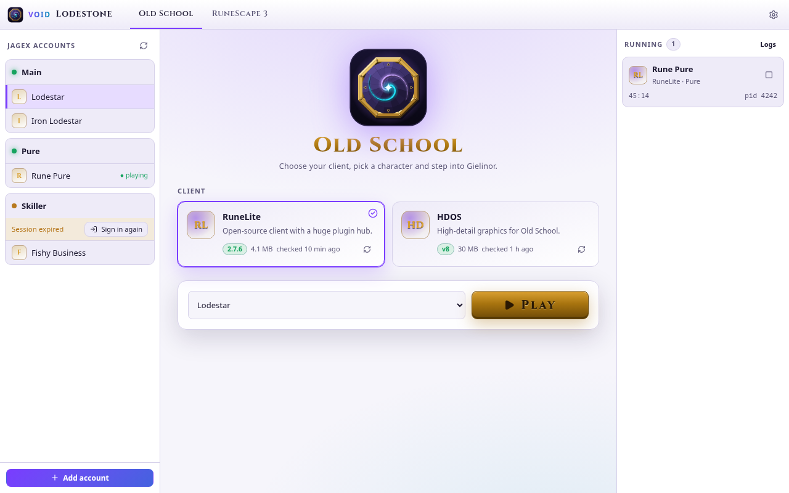

Many accounts
Add as many Jagex accounts as you like. Main, iron, pure, skiller: every character is listed and ready to play.

VOID LodestoneEvery Jagex account, every character, one click from Gielinor.
A fast, open-source Linux launcher for RuneLite, HDOS and RuneScape 3.
Free software · GPL-3.0-or-later · No telemetry

Add as many Jagex accounts as you like. Main, iron, pure, skiller: every character is listed and ready to play.
Launch Old School RuneScape through RuneLite or HDOS. Lodestone fetches them from their official sources and keeps them current.
The RuneScape 3 client just works. The Flatpak bundles the older libraries it still depends on.
Run multiple games side by side, see how long each has been running, read its log and stop it from the launcher.
A native Rust core with a light web UI. It opens instantly and stays out of the way while you play.
Java options, client arguments, a custom Java, launch wrappers such as gamemoderun or mangohud, and seven VOID themes.


Everything included: Java for RuneLite and HDOS, and the libraries RuneScape 3 needs.
flatpak install flathub io.github.M4S4T0_V01D.void-lodestone
flatpak run io.github.M4S4T0_V01D.void-lodestone
Until it lands on Flathub, download the .flatpak bundle from the
latest release and run
flatpak install --user void-lodestone.flatpak.
Needs Rust, Node.js 22 and WebKitGTK 4.1. RuneLite and HDOS need Java 17 or newer; RuneScape 3 needs GTK 2 and OpenSSL 1.1.
git clone https://github.com/M4S4T0-V01D/void-lodestone
cd void-lodestone
npm ci
npx tauri build --no-bundle
./src-tauri/target/release/void-lodestoneLodestone signs in through Jagex's official account system and launches the same clients the official launcher does: RuneLite and HDOS are approved third-party clients, and RuneScape 3 is Jagex's own. It is not affiliated with Jagex, so the usual advice applies: keep to the rules of the game.
Jagex doesn't provide a native Linux build of it. RuneLite and HDOS run natively on Linux and cover what most players want.
In the Flatpak, games use their own home folder inside the app's data, so RuneLite keeps its profiles in
~/.var/app/io.github.M4S4T0_V01D.void-lodestone/data/void-lodestone/home/.runelite. You can point the game home somewhere else in Settings →
Launching.
Jagex sessions don't last forever. Press Sign in again on that account and you're back.
Open an issue with what happened. Game logs are under Settings → Launching → Game logs.